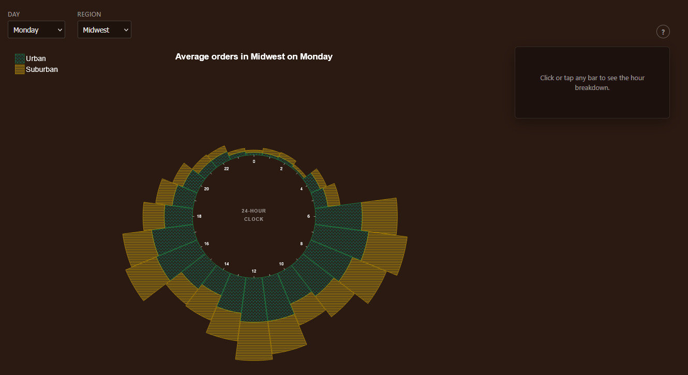

Starbucks Customer Order Times by Locale
An interactive D3.js radial chart that maps average Starbucks order volume across a 24-hour clock, split by urban and suburban locales, with region and day-of-week filters and a detail panel for hour-level breakdowns.
View project on GitHubStarting with the data
This project began as our final assignment for CSC 362 (Data Visualization). Pacis Nkubito and I wanted to explore how customer ordering patterns differ between urban and suburban Starbucks locations across the United States. We started with a Kaggle dataset of Starbucks customer ordering patterns, which included timestamps, store location types, regions, and days of the week.
The raw data was too granular for direct visualization. Each row recorded an individual order time down to the minute, and rural stores were sparse enough that they would have cluttered comparisons without adding much signal. We wrote a Python cleaning script to reshape the dataset into the question we actually cared about: for a given region, locale, day, and hour, what is the average number of orders?
The pipeline removed rural locations, truncated every order timestamp
to the hour (8:54 AM becomes 8 AM, 7:45 PM becomes 7 PM), kept only
the columns we needed (store_location_type,
region, day_of_week,
order_time), and aggregated across the full dataset. The
result is a compact CSV where each row reads something like: in the
Northeast on Monday at 7 PM, suburban Starbucks locations average 15
orders per hour.
Choosing a radial layout
Order volume is inherently cyclical — morning rush, lunch spike, evening taper, overnight lull — so a linear bar chart felt wrong. We mapped the 24 hours of the day onto a clock face, reading clockwise from midnight at the top. Each hour gets a stacked radial bar: the inner segment represents urban volume and the outer segment represents suburban volume. Bar length encodes average orders, so you can scan the full day at a glance and spot peak hours without mentally wrapping a flat axis.

Color alone is not enough to distinguish locales reliably — especially for color-blind readers — so we paired each locale with a distinct SVG pattern fill: dotted texture for urban and diagonal stripes for suburban. Solid stroke colors reinforce the legend without relying on hue alone.
Building it in D3.js
The visualization is built with D3.js v7 and vanilla JavaScript. The
chart root is a single SVG with generous padding so hour labels and
tick marks stay legible at different viewport sizes. D3's
d3.stack() drives the radial segments: we pivot the
cleaned data so each hour row holds urban and suburban values, then
map those stacks onto arc generators with an inner radius of 200px and
an outer radius of 510px.
Two dropdown filters — region and day of week — recompute the stacked dataset and transition the arcs in place. Hovering a segment shows a tooltip with the 12-hour clock conversion and the exact average order count. Clicking an hour opens a side detail panel with a small pie chart breaking down that hour's urban vs. suburban split, using the same pattern fills so the visual language stays consistent.
Responsive layout was a priority from the start. The chart measures its container and scales the SVG viewBox so the radial geometry stays proportional on smaller screens, and the detail panel collapses below the chart when horizontal space runs out.
Accessibility and keyboard support
Because this was a course project with an explicit accessibility
requirement, we treated WCAG compliance as a design constraint rather
than an afterthought. The page includes a skip link to jump directly to
the chart, filter controls are native <select>
elements with associated labels, and an aria-live region
announces filter changes and hour selections to screen readers.
Each radial segment is focusable and navigable with Tab and arrow keys.
Focused segments receive a visible outline, and activating a segment
with Enter or Space opens the same detail panel as a mouse click. SVG
elements carry role, tabindex, and
aria-label attributes so assistive technology can
describe hour, locale, and order count without requiring sighted
interaction.
What I took away
This was one of the first projects where I owned the full pipeline — from messy CSV to polished interactive visualization. The hardest part was not the D3 math but deciding what question the chart should answer and shaping the data to match. Once the aggregation was right, the radial layout made the cyclical patterns obvious in ways a standard bar chart never would have.
The full source code, cleaned dataset, and usage instructions are in the CSC-362-Final-Project repository on GitHub. You can also try a live preview on the portfolio homepage featured project stage.